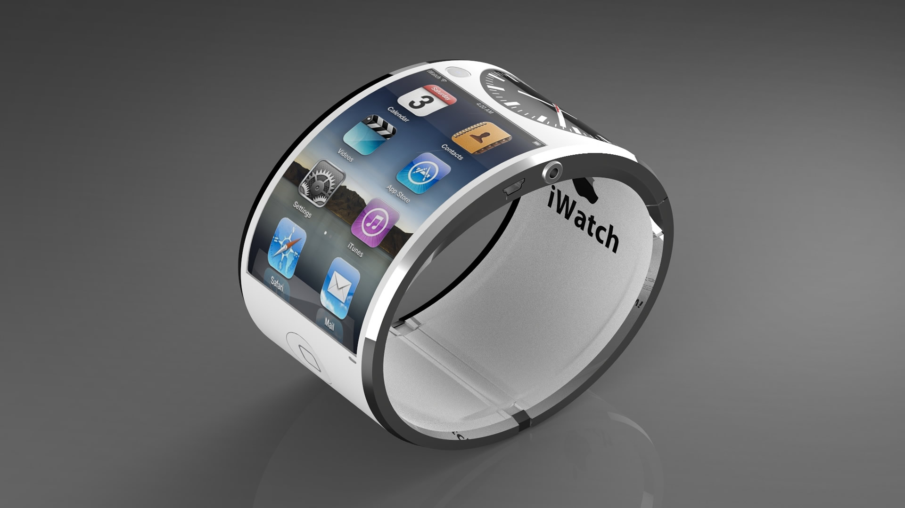

L'internet des objets est une idée récente de l'internet. En clair, l'internet des objets est l'utilisation d'internet à travers les objets du quotidien. Considéré comme la version 3.0 du web, l'internet des objets augmente considérablement le volume de données présent, chaque objet connecté étant en mesure d'envoyer des informations sur le réseau. Parmis les objets faisant partis de ce groupe, on peut citer les nouvelles montres comme l'apple watch.

Cependant, ce groupe est loin de se limiter aux seuls montres connectées. En effet, sous cette dénomination on peut retrouver l'ensemble des objets qui collectent de l'information et l'envoie en ligne sans intervention humaine. Par exemple, un bracelet enregistrant le rythme cardiaque de quelqu'un et alertant automatiquement les pompiers en cas de crise cardiaque entre parfaitement dans cette description.
Ainsi, l'exploitation des connexions à distance et de la collecte de données environnementale prend tout son ampleur. Actuellement, nous sommes loin d'exploiter pleinement ce concept, mais on a atteind le stade où l'on pourrait vivre un nouveau boom technologique, si on ne le vit pas déjà.